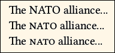

Documentation for novel document class
Documentation version: 1.38.
User Guide
7. Text Sizes, Styles
9. Display, Start Pages;
Chapters; Continued Pages;
Footnotes, Endnotes.
7. Text Sizes and Styling
This page describes how to change the size of text, how to style text (such as italics), and how to move it around. It also describes some miscellaneous commands that are intended to modify text.
If you are looking for information about how to choose the main text point size, see Page 4, because it is considered to be among the layout settings. If you are looking for information about how to choose fonts and font features, see Page 5.
There is no direct setting for normal baselineskip; it is automatically calculated from the size of the textblock and lines per page.
7.1 Text Sizes
Be sure to read through this. In novel, standard TeX font size commands are disabled. There are new commands that address the limited needs for font sizing, in the context of fiction. These new commands are primarily for local adjustments of a few characters, or for display pages that are outside the main flow of text.
7.1.1 Surprise! Traditional TeX Font Size Commands Are Disabled.
Ah, the simplicity of TeX font size commands, such as \small and \LARGE. But in novel, they don't work. If you write {\LARGE text}, then the incuded text appear at normal size. This is by design.
Why? In novel, the focus is on maintaining a constant baselineskip, so that facing pages have text aligned. This is impossible with the standard TeX commands. In particular, commands to increase font size will change the baselineskip, whether you like it or not, even if you try to code for a constant baselineskip. That's just the way TeX works.
The one exception is that footnotes will appear with smaller than normal size and skip. But this is done automatically. You cannot manipulate it with a size command.
Fortunately, there are not a lot of occasions where fiction needs to change font size. In novel, there are new commands to address each situation.
7.1.2 \charscale[scale,hoffset,voffset]{text}, \charscale*[scale,hoffset,voffset]{text}
The \charscale command may be used for a short amount of text, where there is no line break. The command will throw an error if the included text has \\ or \par or any other command that breaks the line. You may not place an image in \charscale.
This command is built into some other novel commands, such as \ChapterTitle.
When used without the option, \charscale echoes the included text. However, the text gains the magical ability to extend above or below the normal line of text, without pushing apart the baselines. This is useful if the text has some unusual character that is extraordinarily tall or deep.
Using the option, you may uniformly scale the text by any amount, and displace it horizontally and vertically. The text can overlie other text, or any previously-placed image.
With the unstarred command, the scaled width of the text will occupy horizontal space, even if the text is displaced far away. But with the starred command, the text does not occupy any horizontal space.
The single optional argument may include up to three comma-separated values. The first value is a number, indicating the scale. If a second argument is used, it is the length of horizontal offset (positive is right). If a third number is used, it is the length of the vertical offset (positive is up). Remember that if all you want to do is scale the text, without positioning it, then you only need to provide the scale.
Here is an example illustrating the command in all its glory:

Bada \charscale*[1.25,5em,1.3\nbs]{Boom} Bam\par
Bada Bam\par
Bada\charscale[1.25,5em,1.3\nbs]{Bang} Bam\par
Bada \charscale[1.25]{Bang} Bam\par
In the result (above right), notice how the starred command leaves no gap where the word Boom would have been. The unstarred command leaves a gap where the word Bang would have been located. In each case, the baseline grid is maintained.
The most practical application of \charscale is styling the first character of chapter text. Drop capitals are out of fashion, but enlarged capitals (rising above the baseline) are in fashion. Example, also using the \FirstLine command (from package magaz, included with novel:
\FirstLine{\noindent\charscale[1.5]{I}t was a dark and stormy night. Lord Withens mounted his horse and rode through the gloom to Castle McDingle, where Baron von Feathering awaited. The pair had dirty deeds to do, but being members of the nobility, they commanded a high price.}

In the above example, the initial I is 1.5x its normal size. It appears larger than that, by comparison to the adjacent small caps letters.
7.1.3 \begin{parascale}[scale] ... \end{parascale}
The parascale environment is used on a paragraph basis. More than one paragraph may be included. The scale is applied to the font size and to the baselineskip within.
Since the text within parascale generally will not occupy an integral number of normal baselineskips, the following text will be off-grid. This may not be a problem, if parascale is used in places where maintaining the grid does not matter (such as on a title page or copyright page).
• If parascale is used within body text, then it will be necessary to restore the line grid for the following text. This cannot be done automatically; you will have to make a preliminary run, look at the results, and adjust accordingly.
For example, suppose you use \begin{parascale}[0.92]...text...\end{parascale}. The preliminary run shows that the included text occupies 7 lines. The following baseline will then be 7x(1–0.92)=0.56 normal baselineskip too high. This can be fixed by adding \vspace{0.56\nbs}. For best appearance, the \vspace should be split above and below the parascale environment, but not nessarily in half.
• If parascale crosses to the next page, then you will need to make vertical adjustment for each page independently. For example, if a 7-line parascale has 3 lines at the bottom of a page, followed by 4 lines on the following page, then you need to restore only a 4 line deficit on the following page.
• Within parascale you may need to manually indent paragraphs, or remove indents if necessary.
7.1.4 Open Type Scale (fontspec)
If you will be using a font in a way that it will always be at a size different from the normal font size, you may use the Scale feature when you first define the font. This is defined by the fontspec package, which is automatically loaded with novel. See Page 5 for details.
A scaled font can be used anywhere. It is not limited to a single line, and it will maintain the line grid at scales not exceeding 1. However, scaled text may disturb the line grid if its scale is more than 1.
7.2 General Styling
Many of these commands are directly from LaTeX, and are mentioned here because they are frequently used. Other commands are specific to novel.
7.2.1 Italics and Emphasis
\textit{text} puts the text in italics, provided that the font family has an Italic font. If it does not have an Italic font, then the letters will remain normal, not fake slanted.
If the italicized text leans too far into the following space, try adding \/ (back and forward slashes) just before closing the braces.
\emph{text} changes regular text to italics, and italic text to regular. You may nest \emph commands. Many writers opine that this is the preferred way to specify Italics.
7.2.2 Bold, Semibold, etc.
\textbf{text} puts the text in whatever font you specified as the Bold font, when you defined the currently-used font family.
If the font family has no Bold font, then it will not be faked.
The default main font used by novel, namely Libertinus Serif, has both Bold and Semibold weights. Given this choice, novel explicitly calls for the Semibold weight. If you intend to use a font such as Adobe Garamond Pro, which also has a Semibold weight, then you can request it instead of Bold when you define the font family. This is discussed on Page 5.
What if you want both Bold and Semibold, or maybe even a Light weight? Only one can be assigned to \textbf when you define the font. For the others, use \NewFontFace to assign the desired weight to its own font command, which you will use (but inside the braces) instead of \textbf.
Actually, you should not be using Bold in fiction. It might be the case that this weight is useful for titles, but you ought to consider a fancy-looking font for that purpose, rather than mere Bold. Or, make the letters big and bold, but balance the effect by using gray.
7.2.3 Underlining
Underlining is inappropriate for fiction. Don't do it. Besides, there are some issues regarding line grid and appearance, which are not a problem in academic works, but are noticeable in fiction.
7.2.4 Small Caps and Acronyms
\textsc{text} converts lowercase letters to small caps, leaving uppercase unchanged. The font's smcp Open Type feature will be used. But if the font does not have smcp, it will not be faked.
\smcp{text} is an alias for \textsc{text}.
\allsmcp{text} places both uppercase and lowercase letters in small caps. If the font has the c2sc feature, it will be used; if not, the letters will be converted to lowercase first. Then, smcp is applied.
• If you require small caps, but your font does not have them, you can fake them by scaling uppercase. But this is usually unattractive. A better method is described in the fontspec package documentation: You may appoint a different font that will provide small caps.
• If you insist on using old-fashioned TeX fonts, which do not have the smcp Open Type feature, then you may need to write this code in the Preamble:
\let\smcp\oldscshape\relax
\let\textsc\oldscshape\relax
\let\scshape\oldscshape\relax
The above code sends you in a time machine back to the Twentieth Century.
\acronym{text} is special to novel. If the NovelDeco font is installed, uppercase letters in the text will be converted to "mid-size capitals," and lowercase will remain lowercase, but with ascenders slightly reduced. The purpose of this command is so that acronyms such as NASA and NATO blend well with surrounding text. I have found that whereas ordinary uppercase is too conspicuous, small caps also looks wrong. Example:

The NATO alliance...\par
The \acronym{NATO} alliance...\par
The \allsmcp{NATO} alliance...\par
Whether or not to use the \acronym command, is up to you. Since its letters are drawn from the NovelDeco font, rather than your main font, there may be some stylistic differences.
7.2.5 Local Tracking Adjustment
\squeeze{text} narrows the text by one percent.
\crush{text} narrows the text by two percent.
These commands are for emergency use only. They temporarily apply a horizontal scale to the letters, so that they are very slightly narrower than usual. Inter-word spacing is not necessarily changed (it can even grow larger), because spacing is calculated during paragraph layout. The enclosed text may span paragraphs.
The commands do not compound. That is, placing one crush inside another will not narrow the text by four percent. But any adjustments made by microtype will still apply, and may compound with these commands.
The only application for these commands is when a paragraph does not quite fit where you would like it to be. For example: Perhaps one short word, or part of a word, dangles to an extra line. Try \squeeze first, then \crush, for all or most of the paragraph. These do not always produce a useful effect, since the actual paragraph layout depends on other factors. But if you are lucky, then the paragraph re-flows to a better layout.
If the commands do not help, then be sure to remove them, or the effect will be worse.
7.2.6 Local Font Selection
{\fontcode text} where fontcode is a previously-defined font command.
You locally change the font in use, by calling its font command. For example, \subchfont is a built-in command, automatically used in certain macros. You can use it yourself:
{\subchfont text} % Note that the braces go on the outside.
Likewise, if you used \NewFontFamily or \NewFontFace to define your own font, giving it the command name \mynewfont, then you would use it like this:
{\mynewfont text} % Again, the braces go on the outside.
7.2.7 Local Feature Changes
{\addfontfeature{feature} text} for changing Open Type features.
If a font is already defined, you can locally add one or more features. For example, suppose that you defined \mynewfont without using its Open Type feature ss03 (we will assume that the font actually has this feature). In a particular place, you wish to activate ss03. The code looks like this:
{\mynewfont\addfontfeature{RawFeature=+ss03} text} % Note + sign. Braces outside.
That limits the scope of the feature to the included group, in TeX terminology.
You can modify features used by any defined font, whether you defined it yourself or it is one of the novel built-in font commands. You can add more than one feature. If the requested feature does not exist in the font, then your request will be ignored.
What about removing a feature that is already present in the font definition? Suppose you defined \mynewfont so that Numbers=OldStyle is used. On a local basis, can you change the style of numbers? Usually, yes. You could use Numbers=Lining to over-ride the feature. Sometimes it depends on how you chose the features, as a matter of syntax. See the fontspec documentation.
7.2.8 Color Text (actually, grayscale)
graytext class option must be used, or any color command will be ignored, and its included text will be rendered in black (even if the requested color is white). Images are unaffected.
\color{name} or \color[gray]{scale} is used within a group. All text will be in grayscale, from where the command is placed, until the group ends. If the command is not at the beginning of the group, it does not affect prior text. Example:
\begingroup
This text is unaffected by the following command.
\color{lightgray} % Alternative: \color[gray]{number 0 to 1}
This text is in lightgray, until the group ends.
\endgroup
\textcolor{text} or \textcolor[gray]{scale}{text} affects only the included text.
\textcolor{gray7}{This text is in color gray7, a medium-light gray.}
\textcolor[gray]{0.32}{This text is in 32 percent gray.}
Whether you use \color or \textcolor, there are two ways to specify the color: by name, or by scale, using package xcolor syntax.
• The following color names are accepted, and will be converted to some shade of gray (from dark to light): black, blue, violet, darkgray, purple, red, teal, olive, magenta, gray, brown, green, orange, cyan, lightgray, lime, pink, yellow, white.
The above names are often not helpful, so novel also allows you to use these: black, gray1, gray2, gray3, gray4, gray5, gray6, gray7, gray8, gray9, white. The scale is not uniform (gray5 is not 50 percent gray), but the values are usefully spaced.
Other names "known to dvips," such as Apricot, do not work. An error will result.
• To specify color by scale, follow the color command with [gray]{scale}, where the scale is a number between 0 (black) and 1 (white). Example: \color[gray]{0.63}.
• If you use xcolor syntax to request an rgb color, it will be converted to 1-channel grayscale.
• Absolutely no transparency!
7.3 Positioning and Alignment
By now, you should be prepared to read this: In novel there are new ways to position or align text, and some of the standard TeX methods are discouraged or disabled.
7.3.1 What to Avoid
• The \raisebox command does not play well with novel. It can be used, but there is the great risk of disturbing the line grid. Use \charscale instead.
• If you must use the \vspace{} command (or its relative, \vskip) be sure to measure the space in units of \nbs (normal baseline skip).
• Avoid minipage and parbox. These commands are likely to disrupt the line grid. When that happens, restoring the grid is your own responsibility. You may find the adjustwidth environment to be a useful alternative.
• Do not use the center environment. You may use {\centering ... \par} instead. The \center environment causes the text to go off-grid. That's not a problem on some stand-alone pages where you don't care about the grid, but it is ugly in the middle or running text.
• Avoid positioning via the textblock or textblock* environments (package textpos). Actually, novel uses textblock* internally. But if not handled with more care than usual, positioned text can disrupt the baseline and position of surrounding text. You may use \charscale to position small amounts of text safely, but not on a paragraph basis. Images have built-in positioning arguments, which may also be useful for positioned text.
• Do not use floats. If you try, then novel may intercept them with a nasty message.
• Do not use tables. Nasty message will result. But novel has its own provision for a Table of Contents, and the code may be used for other purposes as well. See Page 9.
• If you use images, then use only the image commands provided by novel: \InlineImage and \BlockImage. See Page 8
• There is no built-in provision for a two-column environment. However, you can place text alongside an image. See Page 8.
7.3.2 Some Useful Commands
This is not a complete list. It merely addresses a few situations that you are likely to encounter, without the need for elaborate code, and without loading additional packages.
\begin{adjustwidth}{left}{right} ... \end{adjustwidth}
This environment, from the included changepage package, is the most useful way to create block indents. The included text may have multiple paragraphs and span pages. The left and right arguments are lengths, being the amount to increase the respective margins from their normal values.
\phantom{text}
Does not print the text, but leaves a horizontal gap as if the text were there.
\mbox{text}
Prevents a specific word from being hyphenated, or to ensure that two consecitive words always appear on the same line. The box will not be broken across lines. However, it may overhang the margin, which is undesirable.
\makebox[width][alignment]{text}
Puts the text in a box of fixed width (usually much larger than the text's own width) and aligns it left, center, or right in the box. If using this across the full textwidth, be sure to precede it with \noindent to prevent offset.
\hspace{length}
Creates a horizontal space.
\strut
Places an invisible box with no width, which has the height and depth of the font. Sometimes used as a placeholder.
\indent, \noindent, \forceindent, \backindent
Commands \indent and \noindent have their ordinary TeX meaning. Sometimes, the action of other macros will remove an indent that should be there, or add an indent that should not be there. If writing \indent and \noindent do not fix the problems, use \forceindent and \backindent as more forceful solutions.
\hfill
Pushes the following text to the right end of the line. Actual effect depends on what precedes and follows.
\vfill
Pushes the following text to the bottom of the page. Actual effect depends on paragraph organization.
\kern
Tweaks the spacing between consecutive letters. A tricky command, as it is always used without braces, and makes the surrounding text illegible in your source code. If you use it, the units of length should always be em, rather than pt. Example:
It wa\kern-.02ems a da\kern.03emrk and stormy ni\kern-.004emght.
The \kern command is not useful for globally changing kern values. Its most useful application is inserting just enough tweak so that the layout engine formats a paragraph with different line breaks.
\bigemdash[yoffset,thickness]
Simulates a "big emdash" of variable length. Horizontal width is from command to end of line marked by \par, or limited by a fixed width such as created by \makebox. If placed in other situations, the line may be missing or too long.
The line's normal position is at the typical height of an emdash, which is slightly above half the height of lowercase x. Its normal width is typical of an emdash width. Thus, the line is like an extended emdash.
You can tweak the line using its optional argument. The first value tweaks the vertical position by a scale factor, where 1 equals its normal position (so that 0.9 places it a little lower). The second argument, if used, is separated from the first by a comma. It tweaks the line thickness by a scale factor (so that 0.9 makes it a little thinner).
Since \bigemdash allows an optional argument, but no mandatory argument, you may not immediately follow it with text. If it is boxed, then first close the box; otherwise, end the paragraph.
\straightquote \straightdblquote
New in version 1.38: These insert the single quote (apostrophe), and double quote, as ASCII straight characters, without TeX automatically substituting the curly characters.